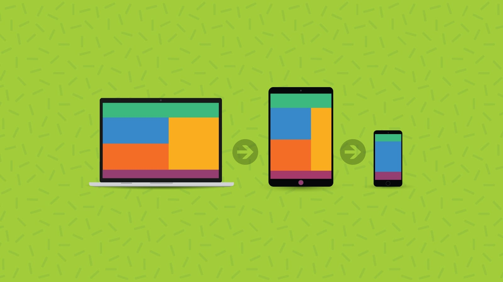

Sitios Responsive con Media Queries
Para entender estos terminos primero damos la definicion de Responsive la cual es una tecnica de diseño Web, la cual busca
que la vizualizacion en distintos dispositivos de una pagina web, sea corecta y entendible, en los celulares, como en televisores,
computadores y cual quier dispocitivo que pueda acceder al sitio web.
Ya con el concepto definido ahora buscaremos el concepto de Media query estas son un complemento de los CSS3 el cual permite adaptar
el contenido con caracteristicas dependiente del dispositivo y caracteres de accesibilidad

Con estos conceptos claros, tenemos que estos sitios buscan la adaptabilidad de las paginas web, haciendo que sea mas intuitivo y facil de
manejar en otros dispositivos aparte de la computadora, ya que las sociedad tanto la tecnologia avanza, esto hace que mas personas obtengan
diferentes tipo de tecnologia como tablets, SmartPhones, televisores inteligentes, etc... Lo que hace que las paginas web, tengan que avanzar
y adaptarse a estos dispositivos, para que la visualizacion sea mas comoda.